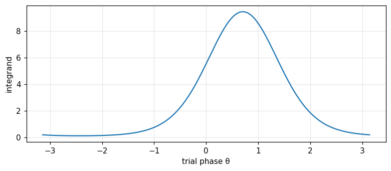

Binary and M-ary detection of deterministic signals in white Gaussian noise via the Karhunen–Loève expansion: the matched filter, correlation receiver, sufficient statistics, the detection parameter; linear estimation of a signal parameter; detection with a random phase and the incoherent matched filter (Barkat, chapter 10).
Use the Karhunen–Loève expansion to reduce continuous signal detection in white noise to a finite-dimensional Gaussian problem, and derive the correlation/matched filter receiver.
Derive the general binary test with two signals correlated by \rho, and recognise antipodal signals (\rho=-1) as optimal.
Extend to M-ary detection, build the "largest of" receiver for equal-energy orthogonal signals, and compute the error probability by integration.
Maximum-likelihood-estimate a linear signal parameter using a correlator, and confirm it attains the Cramér–Rao bound.
Derive the likelihood ratio test for a random-phase signal, recognise the Bessel function I_0, and build the incoherent matched filter (quadrature receiver).
Use the buttons, the dots or the ← → keys to move between slides.
PART 1/5
01
Simple binary detection: the matched filter
Situation: The continuous signal Y(t)=s(t)+W(t) is expanded by Karhunen–Loève; choosing \varphi_1(t)=s(t)/\sqrt E as the first basis function, every other coefficient is independent of the hypothesis.
Complication: The infinite-dimensional observation space reduces to just one dimension: T(Y)=Y_1 is the sufficient statistic, exactly the Gaussian problem Y_1=\sqrt E+W_1 or Y_1=W_1 met in Example 5.1.
Resolution: The optimal receiver is a correlator or matched filter with impulse response h(t)=\varphi_1(T-t); performance depends only on the detection parameter d^2=2E/N_0.
The Karhunen–Loève expansion reduces the problem
A single one-dimensional sufficient statistic
The correlator and matched filter receivers
1/5 · Simple binary detection: the matched filter
From discrete parameters to a continuous waveform
In chapters 5, 6, 9 (modules 21, 22, 24), the observation was a finite number of random variables. This chapter extends to a continuous waveform: under H_1, the transmitter sends a known deterministic signal s(t); under H_0, nothing is sent. At the receiver, H_1{:}\,Y(t)=s(t)+W(t), H_0{:}\,Y(t)=W(t), 0\le t\le T, with W(t) zero-mean white Gaussian noise of two-sided power spectral density N_0/2 (Barkat, pp. 533 to 535).
1/5 · Simple binary detection: the matched filter
Karhunen–Loève: turning the continuous signal into discrete coefficients
To reuse the chapter-5 framework, a countable set of random variables is needed. The Karhunen–Loève expansion represents Y(t) through coefficients Y_k=\int_0^TY(t)\varphi_k(t)\,dt over a complete orthonormal basis \{\varphi_k(t)\}. Choosing \varphi_1(t)=s(t)/\sqrt E (with E=\int_0^Ts^2(t)\,dt the signal energy) as the first basis function; the remaining \varphi_k(t), k\ge2, need only be orthogonal to \varphi_1(t) (Barkat, pp. 535 to 536).
With this choice, Y_1=\sqrt E+W_1 under H_1 and Y_1=W_1 under H_0; every coefficient Y_k, k\ge2, equals just W_k (the Karhunen–Loève noise coefficient) regardless of the hypothesis — carrying no decision information. Since the W_j,W_k are uncorrelated and jointly Gaussian they are statistically independent; hence Y_k, k\ge2, is independent of Y_1 and does not affect the decision. The sufficient statistic is T(Y)=Y_1 — the infinite-dimensional observation space reduces to just one dimension (Barkat, pp. 536 to 537).
1/5 · Simple binary detection: the matched filter
Exactly Example 5.1, only the data-generation route differs
Since W_1 is zero-mean Gaussian with variance E[W_1^2]=(N_0/2)\int_0^T\varphi_1^2(t)\,dt=N_0/2 (since \int\varphi_1^2=1), the problem reduces to exactly Y_1=\sqrt E+W_1 or Y_1=W_1 with m=\sqrt E, \sigma^2=N_0/2 — exactly Example 5.1 (module 21) (Barkat, p. 537). Applying that result directly: threshold \gamma=(N_0/2\sqrt E)\ln\eta+\sqrt E/2, and detection parameter d^2=2E/N_0.
The simple binary detection parameter
d^2=\frac{2E}{N_0}
1/5 · Simple binary detection: the matched filter
The correlation receiver and the matched filter
There are two ways to realize computing Y_1=\int_0^Ty(t)\varphi_1(t)\,dt: a correlation receiver (multiply y(t) by \varphi_1(t) then integrate) or a matched filter with impulse response h(t)=\varphi_1(T-t), 0\le t\le T, sampling the output at t=T (Barkat, pp. 537 to 538). Both give the same Y_1; the matched filter is so named because its impulse response is matched to the time-reversed shape of the signal being sought.
1/5 · Simple binary detection: the matched filter
Measured: d^2, threshold, P_D,P_F match simulation
Measured: with E=4, N_0=1, \eta=1: d^2=2E/N_0 = 8, threshold \gamma = 1. A Monte Carlo simulation of 300,000 trials: the theoretical P_D=Q((\gamma-\sqrt E)/\sqrt{N_0/2}) = 0.9214 matches the simulated 0.9216; the theoretical P_F=Q(\gamma/\sqrt{N_0/2}) = 0.0786 matches the simulated 0.0785.
1/5 · Simple binary detection: the matched filter
Self-check, part 1
Why does only Y_1 carry decision information, while Y_k, k\\ge2, does not?
What form does the matched filter's impulse response take?
What formula gives the detection parameter d^2 of simple binary detection?
Hints: because \varphi_1 is chosen matching the signal shape, while the other \varphi_k contain only noise regardless of hypothesis; h(t)=\varphi_1(T-t); d^2=2E/N_0.
PART 2/5
02
General binary detection: antipodal signals are optimal
Situation: With two arbitrary deterministic signals s_1(t),s_0(t), Gram–Schmidt orthonormalization gives two basis functions, reducing the problem to two dimensions with correlation coefficient \rho.
Complication: Applying module 24's equal-covariance result: the detection parameter d^2=2(E_1+E_0-2\rho\sqrt{E_1E_0})/N_0, and the minimum error probability P(\varepsilon)=Q(\sqrt{2\alpha/N_0}).
Resolution:P(\varepsilon) decreases as \alpha=E_1+E_0-2\rho\sqrt{E_1E_0} increases; for fixed energy, \alpha is maximised when \rho=-1 — antipodal signals (s_0=-s_1) are always optimal.
Gram–Schmidt reduces to two dimensions
The detection parameter and error probability
Why antipodal signals are optimal
2/5 · General binary detection: antipodal signals are optimal
Two arbitrary signals: two basis functions are needed
Generalising: H_1{:}\,Y(t)=s_1(t)+W(t), H_0{:}\,Y(t)=s_0(t)+W(t), with energies E_1,E_0 and correlation coefficient \rho=\frac{1}{\sqrt{E_0E_1}}\int_0^Ts_0(t)s_1(t)\,dt, -1\le\rho\le1. Using Gram–Schmidt: \varphi_1(t)=s_1(t)/\sqrt{E_1}, and \varphi_2(t) is the part of s_0(t) orthogonal to \varphi_1(t), renormalised (Barkat, pp. 544 to 546).
The correlation coefficient between the two signals
2/5 · General binary detection: antipodal signals are optimal
The problem reduces to two dimensions: exactly module 24, part 2
In the new coordinate system, Y_1,Y_2 are independent Gaussian, with the same covariance C=(N_0/2)I under both hypotheses, and mean vectors m_1=[\sqrt{E_1},0]^T, m_0=[\rho\sqrt{E_0},\sqrt{E_0(1-\rho^2)}]^T (Barkat, pp. 546 to 548). This is exactly module 24's equal-covariance problem: the test linearises to T(y)=y^T(m_1-m_0)\gtrless\gamma_1, and can be rewritten with a single correlator, T(y)=\int_0^Ty(t)[s_1(t)-s_0(t)]\,dt.
2/5 · General binary detection: antipodal signals are optimal
The detection parameter and the error probability
Computing d^2=\Delta m^TC^{-1}\Delta m with C=(N_0/2)I: d^2=\dfrac{2}{N_0}(E_1+E_0-2\rho\sqrt{E_1E_0}) (Barkat, pp. 550 to 551). With equal priors, the minimum-error-probability criterion, module 21's result applies directly: P(\varepsilon)=Q(d/2)=Q\!\left(\sqrt{2\alpha/N_0}\right), with \alpha\triangleq E_1+E_0-2\rho\sqrt{E_1E_0} (Barkat, pp. 551 to 552).
The general detection parameter and error probability
2/5 · General binary detection: antipodal signals are optimal
Why antipodal signals (\rho=-1) are always optimal
P(\varepsilon) decreases as \alpha increases (with N_0 fixed); from \alpha=E_1+E_0-2\rho\sqrt{E_1E_0}, with fixed energies E_1,E_0, \alpha is maximised when \rho is minimised, i.e. \rho=-1 (Barkat, p. 552). Then s_0(t)=-s_1(t) — antipodal signals. If in addition E_0=E_1=E, the test reduces to T(y)=y^T(m_1-m_0)\gtrless0 — the threshold sits exactly midway between the two signals, favouring neither.
2/5 · General binary detection: antipodal signals are optimal
Measured: P(\varepsilon) against \rho, confirming antipodal is optimal
Measured: with E_1=4, E_0=3, N_0=1, \rho=-0.5: \alpha = 10.4641, d^2 = 20.9282, theoretical P(\varepsilon) = 0.0111, a Monte Carlo simulation of 300,000 trials matches 0.0111. Comparing three cases of the same energies: \rho=-1 (antipodal) gives P(\varepsilon) = 0.0042, markedly smaller than \rho=0 (orthogonal) giving 0.0307, and both smaller than \rho=-0.5 above — confirming antipodal is always best.
2/5 · General binary detection: antipodal signals are optimal
Self-check, part 2
What does the correlation coefficient \\rho between the two signals measure?
Why does the general binary detection problem reduce exactly to module 24?
What value of \\rho gives the smallest error probability, for fixed signal energy?
Hints: how similar the waveforms s_0(t) and s_1(t) are; because after Gram–Schmidt, the covariance is equal under both hypotheses (C=(N_0/2)I); \rho=-1 (antipodal signals).
PART 3/5
03
M-ary detection: the "largest of" receiver
Situation: With M signals s_k(t), the Karhunen–Loève expansion reduces the observation space to at most K\le M dimensions — the number of linearly independent signals.
Complication: With equal priors, the MAP criterion reduces to ML: choose the hypothesis maximising f_{Y|H_j}, equivalent to choosing the closest signal (minimum distance).
Resolution: With orthogonal equal-energy signals, the sufficient statistic is T_j(y)=\int_0^Ty(t)s_j(t)\,dt — the "largest of" receiver, and the error probability is computed by a closed integral.
The observation space reduces to K\le M dimensions
MAP reduces to ML: minimum distance
The "largest of" receiver and the error probability
3/5 · M-ary detection: the "largest of" receiver
From two hypotheses to M hypotheses
Generalising: H_k{:}\,Y(t)=s_k(t)+W(t), k=1,\ldots,M, each signal of energy E_k, possibly correlated through a coefficient \rho_{jk} (Barkat, pp. 557 to 558). Using Gram–Schmidt on the M signals, only K\le M basis functions are needed if just K of the M signals are linearly independent. Every Y_k, k>K, contains only noise, not affecting the decision — the infinite-dimensional observation space reduces to K dimensions.
3/5 · M-ary detection: the "largest of" receiver
MAP reduces to ML when the priors are equal
The optimal decision chooses the hypothesis maximising the posterior P(H_j|Y) (module 21). If P_j=1/M for every j, maximising the posterior is equivalent to maximising f_{Y|H_j}(y|H_j) — the MAP criterion reduces to ML. Because the density is Gaussian, maximising f_{Y|H_j} is equivalent to minimising \sum_{k=1}^K(y_k-s_{kj})^2=\|y-s_j\|^2 — the squared Euclidean distance between the observation and each signal (Barkat, pp. 559 to 560).
Orthogonal, equal-energy signals: the "largest of" receiver
If every signal has the same energy E, expanding \|y-s_j\|^2=\|y\|^2-2y^Ts_j+E; since \|y\|^2 and E are the same for every j, minimising the distance is equivalent to maximising y^Ts_j=\int_0^Ty(t)s_j(t)\,dt (Barkat, p. 560). The optimal receiver computes M correlation values T_j(y)=\int_0^Ty(t)s_j(t)\,dt and chooses the hypothesis with the largest value — the \"largest of\" receiver.
3/5 · M-ary detection: the "largest of" receiver
The error probability for M orthogonal signals
With orthogonal signals (\rho_{jk}=0), the T_k are independent Gaussian: under H_1, T_1\sim\mathcal N(E,N_0/2) while T_k\sim\mathcal N(0,N_0/2), k\ge2. The probability of a correct decision is P_c=P(T_2<T_1,\ldots,T_M<T_1|H_1), computed by a nested integral: P_c=\int_{-\infty}^\infty f_{T_1|H_1}(t_1|H_1)\left[\int_{-\infty}^{t_1}f_{T_k|H_1}(t_k|H_1)\,dt_k\right]^{M-1}dt_1, and P(\varepsilon)=1-P_c (Barkat, pp. 560 to 562).
The error probability for M equal-energy orthogonal signals
Measured: the closed integral matches a direct simulation
Measured: with M=4, E=2, N_0=1: the error probability computed by numerical integration of the formula above is 0.1772, and a Monte Carlo simulation of 300,000 trials (directly generating independent Gaussian T_1,\ldots,T_M and counting how often some T_k, k\ge2, exceeds T_1) gives 0.1766 — agreeing, confirming the integral formula is correct without needing a lookup table or approximation.
3/5 · M-ary detection: the "largest of" receiver
Self-check, part 3
When the priors are equal, what does the MAP criterion reduce to?
When can the \"largest of\" receiver be applied, in terms of the signal set?
How is the error probability for M orthogonal signals computed?
Hints: the maximum likelihood (ML) criterion; when every signal is orthogonal and of equal energy; by a nested integral of the independent Gaussian densities.
PART 4/5
04
Linear estimation of a signal parameter
Situation: With Y(t)=\theta s(t)+W(t), \theta the parameter to estimate (linear in s(t)), the Karhunen–Loève expansion again reduces to exactly Y_1=\theta\sqrt E+W_1 — a single dimension carrying information.
Complication: The ML estimate \hat\theta_{ml}=Y_1/\sqrt E is exactly a normalised correlator; unbiased, and attaining the Cramér–Rao bound N_0/(2E) exactly — an efficient estimator.
Resolution: This is a direct bridge between module 22's estimation theory and this chapter's waveform problem — the same tool, a different object (an amplitude parameter instead of discrete samples).
The linear signal model \theta s(t)
The ML estimate is a correlator
Measured: unbiased and attaining the Cramér–Rao bound
4/5 · Linear estimation of a signal parameter
The model: a parameter multiplying a known waveform linearly
Consider Y(t)=\theta s(t)+W(t), 0\le t\le T, with s(t) known (energy E) and \theta a scalar parameter to estimate — for example an unknown signal amplitude. The mapping \theta\mapsto\theta s(t) is linear (s(t,\theta_1+\theta_2)=s(t,\theta_1)+s(t,\theta_2)), so this is called a linear estimation problem (Barkat, pp. 572 to 573).
4/5 · Linear estimation of a signal parameter
Reducing again to Y_1: exactly part 1's Karhunen–Loève technique
Using the same \varphi_1(t)=s(t)/\sqrt E: Y_1=\int_0^TY(t)\varphi_1(t)\,dt=\theta\sqrt E+W_1, while Y_k, k>1, equals just W_k, independent of \theta. Hence Y_1 is a sufficient statistic for \theta, Gaussian of mean \theta\sqrt E, variance N_0/2 (Barkat, p. 573).
4/5 · Linear estimation of a signal parameter
The ML estimate: solving the likelihood equation for Gaussian Y_1
The likelihood function L(\theta)=f_{Y_1|\Theta}(y_1|\theta) is Gaussian in \theta; solving \partial\ln L/\partial\theta=0 gives (\sqrt E/N_0)(y_1-\theta\sqrt E)\cdot2=0, i.e. \hat\theta_{ml}=Y_1/\sqrt E — a correlator between Y(t) and s(t), normalised by \sqrt E (Barkat, pp. 573 to 574). Physically, this is exactly part 1's correlation receiver, only reading out an estimated amplitude instead of issuing a binary decision.
E[\hat\theta_{ml}]=E[Y_1]/\sqrt E=\theta\sqrt E/\sqrt E=\theta — unbiased. From differentiating the likelihood function, \partial\ln L/\partial\theta=(2\sqrt E/N_0)(y_1-\theta\sqrt E) has exactly the form c(\theta)[\hat\theta-\theta] with c=2E/N_0 — module 22's efficiency condition (Barkat, pp. 574 to 575). The Cramér–Rao bound is attained exactly, equal to N_0/(2E).
4/5 · Linear estimation of a signal parameter
Measured: mean, variance, and the Cramér–Rao bound match simulation
Measured: with E=4, N_0=1, true \theta = 2.3, a simulation of 300,000 trials: the measured mean of \hat\theta_{ml} is 2.2989 (matching \theta=2.3); the measured variance is 0.1249, matching the Cramér–Rao bound N_0/(2E) = 0.125 — confirming \hat\theta_{ml} is both unbiased and efficient.
4/5 · Linear estimation of a signal parameter
Self-check, part 4
Why is the model Y(t)=\\theta s(t)+W(t) called a \"linear\" estimation problem?
What physical device from part 1 does the ML estimate \\hat\\theta_{ml} correspond to?
What quantity does the variance of \\hat\\theta_{ml} attain exactly?
Hints: because the mapping \theta\mapsto\theta s(t) satisfies the linear superposition principle; the correlation receiver (correlator); the Cramér–Rao bound N_0/(2E).
PART 5/5
05
Unwanted parameters: random phase and the incoherent matched filter
Situation: Many practical problems (radar, communications) have a signal with an unknown initial phase, modelled as a random variable uniform on [-\pi,\pi] — an "unwanted" parameter.
Complication: Averaging the likelihood ratio over the random phase gives an integral of the form \int e^{a\cos\theta+b\sin\theta}d\theta, exactly the definition of the modified Bessel function of order 0, I_0(\sqrt{a^2+b^2}).
Resolution: The optimal test needs only the envelope r=\sqrt{y_c^2+y_s^2} of two quadrature components — the incoherent matched filter, realized by a quadrature receiver and an envelope detector.
An unwanted parameter: random phase
Averaging over phase gives the Bessel function I_0
The incoherent matched filter
5/5 · Unwanted parameters: random phase and the incoherent matched filter
When the signal is not fully known in advance: an unwanted parameter
In many applications (a radar echo, a fading channel), the received signal has one or more unknown parameters — called unwanted parameters, unlike the earlier parts where s_1(t),s_0(t) were fully specified in advance. If the parameter is random with a known prior density, average the likelihood ratio over that density as K\to\infty in the Karhunen–Loève expansion (Barkat, pp. 580 to 582).
5/5 · Unwanted parameters: random phase and the incoherent matched filter
The standard example: a phase uniform on [-\pi,\pi]
Consider H_1{:}\,Y(t)=A\cos(\omega_ct+\Theta)+W(t), H_0{:}\,Y(t)=W(t), known amplitude A and frequency \omega_c, with the phase \Theta uniform on [-\pi,\pi] (Barkat, pp. 583 to 584). Define the two quadrature components y_c=\int_0^Ty(t)\cos\omega_ct\,dt, y_s=\int_0^Ty(t)\sin\omega_ct\,dt; expand \cos(\omega_ct+\theta)=\cos\omega_ct\cos\theta-\sin\omega_ct\sin\theta to separate the \theta-dependent part.
5/5 · Unwanted parameters: random phase and the incoherent matched filter
Averaging over phase: the Bessel function I_0 appears
Averaging the likelihood ratio over \theta uniform on [-\pi,\pi] gives \frac{1}{2\pi}\int_{-\pi}^\pi\exp\left[\frac{2A}{N_0}(y_c\cos\theta-y_s\sin\theta)\right]d\theta — exactly the integral definition of the modified Bessel function of order 0: \frac1{2\pi}\int_{-\pi}^\pi e^{a\cos x+b\sin x}\,dx=I_0(\sqrt{a^2+b^2}) (Barkat, pp. 584 to 585). The result: \Lambda=e^{-A^2T/2N_0}I_0\!\left(\frac{2A}{N_0}\sqrt{y_c^2+y_s^2}\right).
5/5 · Unwanted parameters: random phase and the incoherent matched filter
The test needs only the envelope r: the incoherent matched filter
Since I_0(\cdot) is monotonically increasing, the test \Lambda\gtrless\eta is equivalent to r=\sqrt{y_c^2+y_s^2}\gtrless\gamma_2 — needing only the envelope of the two quadrature components, without knowing the true phase \Theta (Barkat, pp. 585 to 587). Realized with matched filters (or correlators) against \cos\omega_ct and \sin\omega_ct, squaring each branch, summing, then comparing to a threshold — called the incoherent matched filter or the quadrature receiver.
5/5 · Unwanted parameters: random phase and the incoherent matched filter
Measured: the phase-averaged integral matches the closed Bessel function
Measured: with A=1.5, N_0=1, true signal phase \theta=0.7 rad, computing y_c,y_s from a sample signal segment, then r=\sqrt{y_c^2+y_s^2}. The direct numerical integral \frac1{2\pi}\int_{-\pi}^\pi\exp\left[\frac{2A}{N_0}(y_c\cos\theta-y_s\sin\theta)\right]d\theta gives 2.7172, matching the closed Bessel function value I_0(2Ar/N_0) = 2.7172 — confirming the I_0 formula is correct, needing no further assumption beyond its integral definition.

Figure 1. The integrand of the phase-averaging integral, used to derive the Bessel-function I0 likelihood ratio of the random-phase problem.
5/5 · Unwanted parameters: random phase and the incoherent matched filter
Self-check, part 5
How does an \"unwanted\" parameter differ from a fully known-in-advance parameter?
Averaging the likelihood ratio over a uniformly random phase leads to what special function?
What quantity of the received signal does the incoherent matched filter need, without knowing the true phase?
Hints: its value is not known in advance, only its probability density (random); the modified Bessel function of order 0, I_0; the envelope r=\sqrt{y_c^2+y_s^2} of the two quadrature components.
SUMMARY
Takeaways
The Karhunen–Loève expansion reduces continuous waveform detection in white noise to a finite-dimensional Gaussian problem; for simple binary detection, only one dimension (Y_1) carries information — exactly Example 5.1.
General binary detection reduces exactly to module 24's equal-covariance problem: d^2=2(E_1+E_0-2\rho\sqrt{E_1E_0})/N_0; antipodal signals (\rho=-1) are always optimal.
M-ary detection with equal priors reduces MAP to ML (minimum distance); equal-energy orthogonal signals give the "largest of" receiver, the error probability computed by a nested integral of independent Gaussian densities.
Linear estimation of \theta s(t) reuses exactly the Karhunen–Loève technique, giving \hat\theta_{ml}=Y_1/\sqrt E — a correlator, unbiased, attaining the Cramér–Rao bound N_0/(2E).
With a random phase (an unwanted parameter), averaging the likelihood ratio gives the Bessel function I_0; the optimal test needs only the envelope r=\sqrt{y_c^2+y_s^2} — the incoherent matched filter.
📜 Theory & historical background
The matched filter theory originates in the work of D. O. North around 1943 for wartime military radar; the Karhunen–Loève expansion bears the names of Kari Karhunen and Michel Loève, developed independently in the 1940s in random process theory. The incoherent matched filter and the Bessel function I_0 became standard tools for random-phase radar target detection from the 1950s onward (Barkat, pp. 533, 583, the end-of-chapter references).
🔎 Real-world case study
From a continuous signal to a decision, an estimate, and an envelope. With E=4, N_0=1: simple binary detection gives d^2=8, P_D=0.9214 matching the simulated 0.9216. Extending to two correlated signals \rho=-0.5 (E_1=4,E_0=3): P(\varepsilon)=0.0111 matches 0.0111, and antipodal (\rho=-1) gives 0.0042, markedly smaller than orthogonal's 0.0307. With M=4 equal-energy orthogonal signals of energy E=2: the integrated error probability 0.1772 matches the simulated 0.1766. Estimating an amplitude \theta=2.3 via a correlator gives a mean 2.2989, a variance 0.1249 matching the Cramér–Rao bound 0.125 exactly. Finally, with a random phase, the phase-averaged integral 2.7172 matches the closed Bessel function 2.7172.
The notebook generates its own data in code, so no external files are needed. Every number on this page is printed by the notebook and cross-checked with two independent methods.
⚠️ Common misreadings
"Orthogonal signals (\rho=0) are always the best choice for binary detection."
Wrong: for fixed energy, antipodal signals (\rho=-1) always give a smaller error probability than orthogonal signals — confirmed numerically in part 2 (0.0042 against 0.0307). Orthogonal is only optimal when some other constraint (like bandwidth) prevents using antipodal signals.
"The incoherent matched filter needs to know the signal's true phase to work."
The opposite: the whole point of the incoherent matched filter is that it does NOT need to know the phase — it uses only the envelope r=\sqrt{y_c^2+y_s^2}, invariant to the true phase (confirmed numerically in part 5). This is exactly why it suits radar target detection where the echo phase is unknown in advance.
"The estimate \hat\theta_{ml}=Y_1/\sqrt E is merely a mathematical formula, unrelated to any physical receiver."
Wrong: \hat\theta_{ml} is exactly the output of the correlation receiver (or matched filter) built in part 1, simply read as a number instead of compared to a binary threshold — the same hardware circuit serves both detection and estimation.
✅ Self-check quiz
Click an answer to grade it immediately and read the explanation. Results are not saved.
References
M. Barkat, Signal Detection and Estimation, 2nd ed., Artech House, 2005, chapter 10 (pp. 533 to 590).
Works cited by the chapter: D. O. North (the matched filter, 1943); K. Karhunen, M. Loève (the orthogonal expansion, 1940s); H. L. Van Trees, Detection, Estimation, and Modulation Theory.
The content was written with AI assistance (Claude) and then checked. Every number is produced by a Jupyter notebook and cross-checked by two independent methods; page citations come from the OCR text of the two source books. Mistakes may remain, so please report them.
R. N. Bracewell, The Fourier Transform and Its Applications, 3rd ed., McGraw-Hill, 2000.
M. Barkat, Signal Detection and Estimation, 2nd ed., Artech House, 2005.
This site only summarises, explains and checks numbers; please read the original books through a library or the publisher.
Contribute
Report errors, suggest modules or translations in the GitHub repository, and fork or clone it for your own study. Please credit the source when sharing.